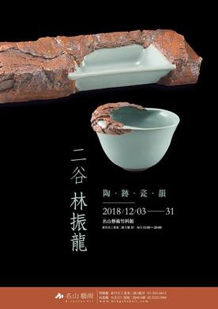

SPACE & GLAZE SERIES
林振龍Lin Chen-Long · Er-Gu
Lin Chen-Long, born in 1955 in Nantou County, is a renowned Taiwanese ceramist and founder of the Tsu Yang Kiln (瓷揚窯), one of Taiwan's most celebrated kilns. A pioneer in promoting collaboration between ceramists, painters, and calligraphers, Lin is dedicated to advancing modern ceramics. His work contemplates the relationship between humanity and the environment while embracing the beauty of simplicity, blending Western Formalism with Eastern glazes in a harmonious fusion of the two traditions.

Selected Works
作品選粹


"Lin Chen-Long is an artist who absorbs various artistic trends and learns from nature."
— Liou Chen-chou, Professor, National Taiwan University of Arts
